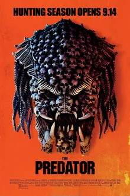

The genetics
This entry in the Predator franchise adds a genetic motive to the alien hunters: they are no longer only trophy seekers, but are upgrading themselves by incorporating the DNA of the species they hunt, including humans, to create ever more powerful hybrids. The larger Predator is the result of this programme, and it kidnaps Rory because it sees his autism as an advanced trait in human evolution, worth incorporating. The scientist figure, Casey Bracket, is a capable evolutionary biologist who works for a secret government programme but sides with the soldiers, while the agency's chief, Traeger, wants to exploit the aliens' technology. Genetics is treated loosely: taking DNA from another species does not simply transfer its traits. The film's suggestion that autism represents a forward step in evolution was criticised by reviewers, and scientists consulted by Syfy Wire raised problems with the idea.
How genetics is portrayed
- Overall portrayal of genetics
- negative Genetic engineering in the film is an alien programme of predatory self-upgrading that treats humans as raw material, and the human project around it is ruthless; the competent biologist only decodes the threat, and the ending sets up a larger conflict.
- Outcome of the genetic intervention
- negative The Predators' genetic self-improvement produces a stronger hunter that kills soldiers, lab staff and most of the veterans and abducts a child for hybridisation.
- The Predators
- villain Aim: power (negative). The alien hunters (an alien species, hence 'other') upgrade themselves by splicing in the DNA of the species they hunt; the larger, enhanced Predator kills the first one and its pursuers and kidnaps Rory as material for hybridisation before the survivors kill it.
- Casey Bracket
- hero Aim: curiosity (neutral). The evolutionary biologist recruited by the government's Stargazer project analyses the Predator's genome, finds human DNA and works out the hybridisation programme; she sides with the soldiers and helps kill the Predator.
- Will Traeger (Stargazer Project)
- villain Aim: military, power (negative). The project's director has the captured Predator studied to exploit its technology, takes Rory, orders the others executed and dies by misusing a Predator weapon.
The story
A Predator ship crashes on Earth, and Army Ranger sniper Quinn McKenna, who encounters the alien during a mission, mails parts of its armour home as proof. Government agent Will Traeger captures the Predator and recruits the evolutionary biologist Casey Bracket to study it; she discovers that its genome contains human DNA. The Predator escapes, and Quinn, held with a group of former soldiers, joins forces with them and Bracket. Quinn's autistic son Rory, who has been playing with the armour and understands its technology, becomes a target when a larger, more powerful Predator arrives, kills the first one and comes for the lost equipment. Bracket concludes that the Predators are improving themselves with the DNA of other species, and Traeger believes they are collecting human DNA before climate change wipes humanity out. The big Predator kidnaps Rory as a subject for hybridisation, but the survivors kill it. Its ship contains a "Predator killer" suit, left by the first Predator to help humanity.